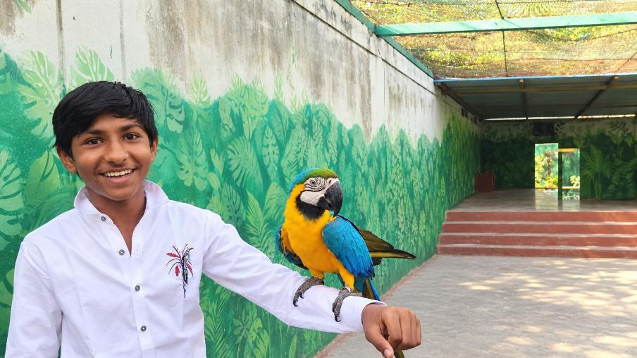

ABOUT THE AUTHOR
Neev
Inani
Wildlife enthusiast. Nature lover. Writer. Aspiring wildlife filmmaker.

HIS STORY
A life inspired
by the wild.
Neev Inani is a young wildlife enthusiast, nature lover, and aspiring wildlife filmmaker from India. His fascination with wild animals and their natural habitats has inspired him to learn, explore, photograph, and create stories about India’s incredible wildlife.
Through his books and creative projects, Neev aims to bring people closer to nature and spread awareness about the importance of wildlife conservation. He believes that protecting wildlife is not only about saving animals—it is about protecting forests, ecosystems, and the future of our planet.
His work is driven by curiosity, passion, and a simple goal: to make people care about the wild before it is too late.
This book is a part of that journey.
“To make people care about the wild before it is too late.”Neev Inani